tcpdump - 课堂笔记
Contents
1. 显形“不可见”的网络包
1.1. tcpdump 和 Wireshark 有什么区别
tcpdump 和 Wireshark 就是最常用的网络抓包和分析工具，更是分析网络性能必不可少的利器。
- tcpdump 仅支持命令行格式使用，常用在 Linux 服务器中抓取和分析网络包。
- Wireshark 除了可以抓包外，还提供了可视化分析网络包的图形页面。
所以，这两者实际上是搭配使用的，先用 tcpdump 命令在 Linux 服务器上抓包，接着把抓包的文件拖出到 Windows 电脑后，用 Wireshark 可视化分析。
当然，如果你是在 Windows 上抓包，只需要用 Wireshark 工具就可以。
1.2. tcpdump 在 Linux 下如何抓包
tcpdump 提供了大量的选项以及各式各样的过滤表达式，来帮助你抓取指定的数据包，不过不要担心，只需要掌握一些常用选项和过滤表达式，就可以满足大部分场景的需要了。
假设我们要抓取下面的 ping 的数据包：

要抓取上面的 ping 命令数据包，首先我们要知道 ping 的数据包是 icmp 协议，接着在使用 tcpdump 抓包的时候，就可以指定只抓 icmp 协议的数据包：
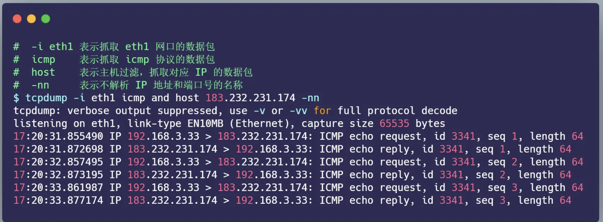
从 tcpdump 抓取的 icmp 数据包，我们很清楚的看到 icmp echo 的交互过程了，首先发送方发起了 ICMP echo request 请求报文，接收方收到后回了一个 ICMP echo reply 响应报文，之后 seq 是递增的。
我在这里也帮你整理了一些最常见的用法，并且绘制成了表格，你可以参考使用。
首先，先来看看常用的选项类，在上面的 ping 例子中，我们用过 -i 选项指定网口，用过 -nn 选项不对 IP 地址和端口名称解析。其他常用的选项，如下表格：

接下来，我们再来看看常用的过滤表用法，在上面的 ping 例子中，我们用过的是 icmp and host 183.232.231.174，表示抓取 icmp 协议的数据包，以及源地址或目标地址为 183.232.231.174 的包。其他常用的过滤选项，我也整理成了下面这个表格。
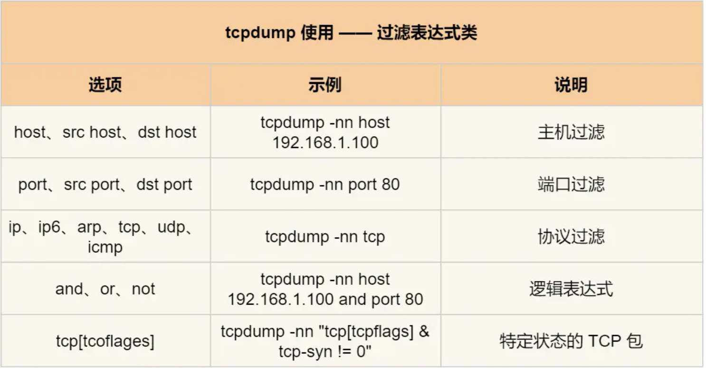
说了这么多，你应该也发现了，tcpdump 虽然功能强大，但是输出的格式并不直观。
所以，在工作中 tcpdump 只是用来抓取数据包，不用来分析数据包，而是把 tcpdump 抓取的数据包保存成 pcap 后缀的文件，接着用 Wireshark 工具进行数据包分析。
1.3. Wireshark 工具如何分析数据包？
Wireshark 除了可以抓包外，还提供了可视化分析网络包的图形页面，同时，还内置了一系列的汇总分析工具。
比如，拿上面的 ping 例子来说，我们可以使用下面的命令，把抓取的数据包保存到 ping.pcap 文件
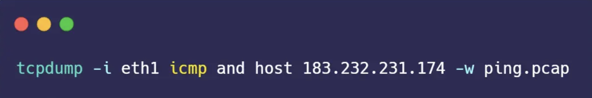
接着把 ping.pcap 文件拖到电脑，再用 Wireshark 打开它。打开后，你就可以看到下面这个界面：
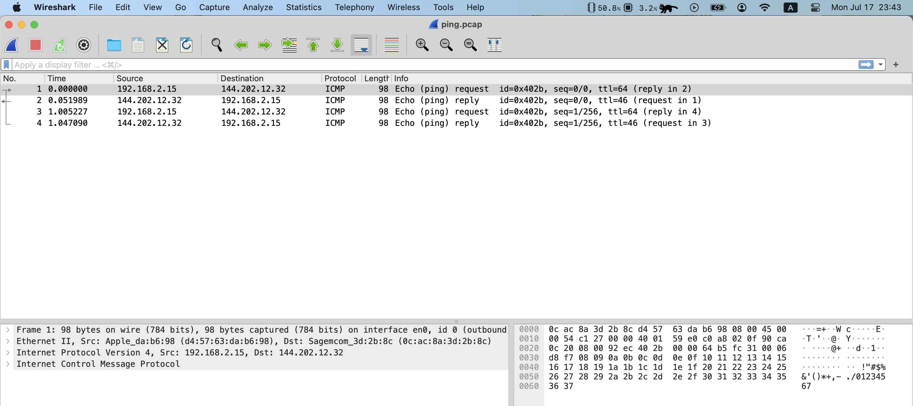
是吧？在 Wireshark 的页面里，可以更加直观的分析数据包，不仅展示各个网络包的头部信息，还会用不同的颜色来区分不同的协议，由于这次抓包只有 ICMP 协议，所以只有紫色的条目。
接着，在网络包列表中选择某一个网络包后，在其下面的网络包详情中，可以更清楚的看到，这个网络包在协议栈各层的详细信息。比如，以编号 1 的网络包为例子：

- 可以在数据链路层，看到 MAC 包头信息，如源 MAC 地址和目标 MAC 地址等字段；
- 可以在 IP 层，看到 IP 包头信息，如源 IP 地址和目标 IP 地址、TTL、IP 包长度、协议等 IP 协议各个字段的数值和含义；
- 可以在 ICMP 层，看到 ICMP 包头信息，比如 Type、Code 等 ICMP 协议各个字段的数值和含义；
Wireshark 用了分层的方式，展示了各个层的包头信息，把“不可见”的数据包，清清楚楚的展示了给我们，还有理由学不好计算机网络吗？是不是相见恨晚？
从 ping 的例子中，我们可以看到网络分层就像有序的分工，每一层都有自己的责任范围和信息，上层协议完成工作后就交给下一层，最终形成一个完整的网络包。
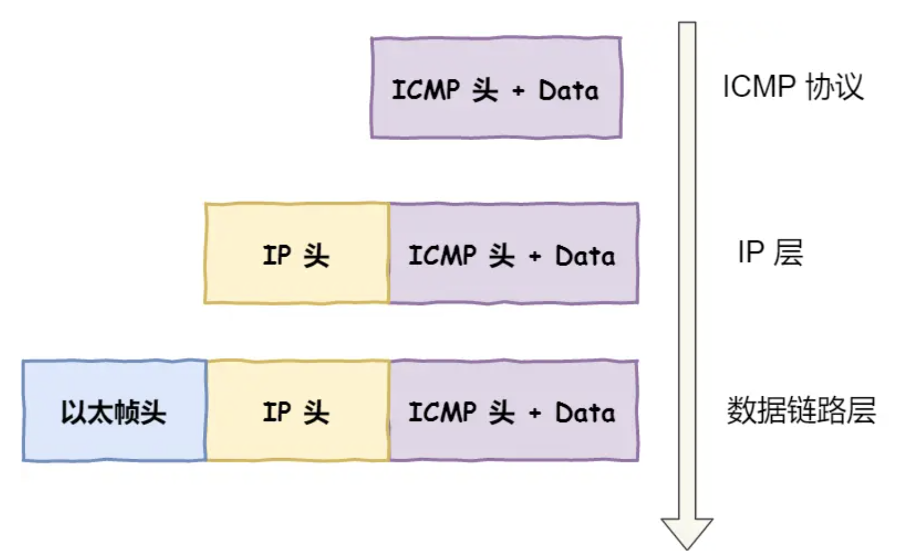
2. 解密 TCP 三次握手和四次挥手
既然学会了 tcpdump 和 Wireshark 两大网络分析利器，那我们快马加鞭，接下来用它俩抓取和分析 HTTP 协议网络包，并理解 TCP 三次握手和四次挥手的工作原理。
本次例子，我们将要访问的 http://192.168.3.200 服务端。在终端一用 tcpdump 命令抓取数据包：

|
|
接着，在终端二执行下面的 curl 命令：
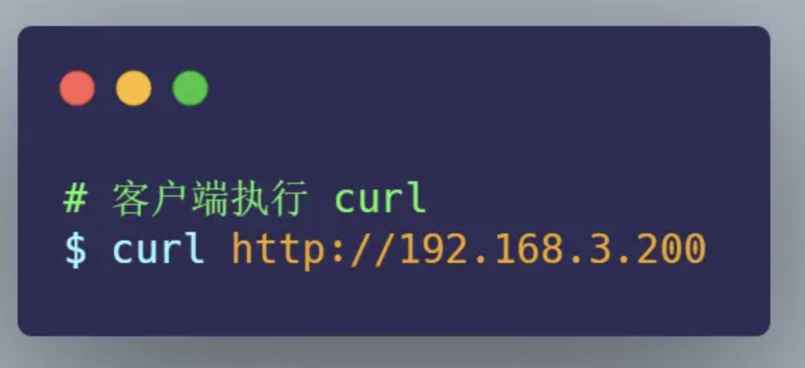
最后，回到终端一，按下 Ctrl+C 停止 tcpdump，并把得到的 http.pcap 取出到电脑。
使用 Wireshark 打开 http.pcap 后，你就可以在 Wireshark 中，看到如下的界面：

上面给的例子是理想状态, 我在电脑上开启http服务器, 然后捕捉到的数据如下, 可以看到有重传, duplicate ack 等:

我们都知道 HTTP 是基于 TCP 协议进行传输的，那么：
- 最开始的 3 个包就是 TCP 三次握手建立连接的包
- 中间是 HTTP 请求和响应的包
- 而最后的 3 个包则是 TCP 断开连接的挥手包
Wireshark 可以用时序图的方式显示数据包交互的过程，从菜单栏中，点击 统计 (Statistics) -> 流量图 (Flow Graph)，然后，在弹出的界面中的「流量类型」选择 「TCP Flows」，你可以更清晰的看到，整个过程中 TCP 流的执行过程：
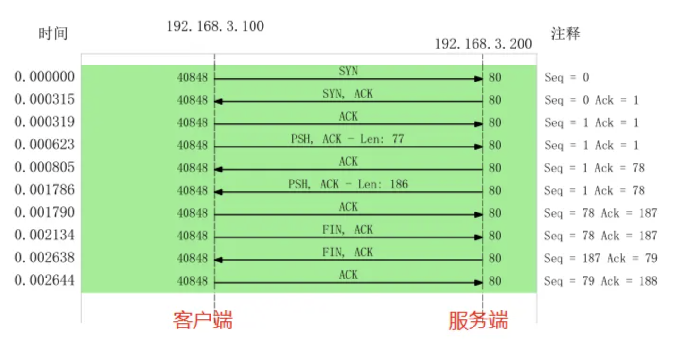
2.1. 为什么三次握手连接过程的 Seq 是 0 ？
实际上是因为 Wireshark 工具帮我们做了优化，它默认显示的是序列号 seq 是相对值，而不是真实值。
如果你想看到实际的序列号的值，可以右键菜单， 然后找到「协议首选项」，接着找到「Relative Seq」后，把它给取消，操作如下：

取消后，Seq 显示的就是真实值了：

可见，客户端和服务端的序列号实际上是不同的，序列号是一个随机值。
这其实跟我们书上看到的 TCP 三次握手和四次挥手很类似，作为对比，你通常看到的 TCP 三次握手和四次挥手的流程，基本是这样的
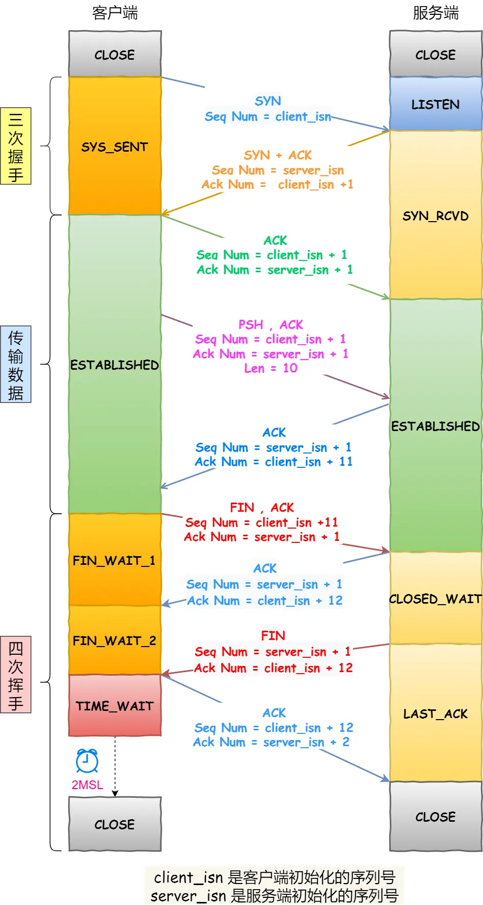
2.2. 为什么抓到的 TCP 挥手是三次，而不是书上说的四次？
当被动关闭方（上图的服务端）在 TCP 挥手过程中，「没有数据要发送」并且「开启了 TCP 延迟确认机制」，那么第二和第三次挥手就会合并传输，这样就出现了三次挥手。
而通常情况下，服务器端收到客户端的 FIN 后，很可能还没发送完数据，所以就会先回复客户端一个 ACK 包，稍等一会儿，完成所有数据包的发送后，才会发送 FIN 包，这也就是四次挥手了。
3. TCP 三次握手异常情况实战分析
TCP 三次握手的过程相信大家都背的滚瓜烂熟，那么你有没有想过这三个异常情况：
- TCP 第一次握手的 SYN 丢包了，会发生了什么？
- TCP 第二次握手的 SYN、ACK 丢包了，会发生什么？
- TCP 第三次握手的 ACK 包丢了，会发生什么？
有的小伙伴可能说：“很简单呀，包丢了就会重传嘛。”
那我在继续问你：
- 那会重传几次？
- 超时重传的时间 RTO 会如何变化？
- 在 Linux 下如何设置重传次数？
- ….
是不是哑口无言，无法回答？
不知道没关系，接下里我用三个实验案例，带大家一起探究探究这三种异常。
3.1. 实验场景
本次实验用了两台虚拟机，一台作为服务端，一台作为客户端，它们的关系如下：

3.2. 实验一：TCP 第一次握手 SYN 丢包
为了模拟 TCP 第一次握手 SYN 丢包的情况，我是在拔掉服务器的网线后，立刻在客户端执行 curl 命令：
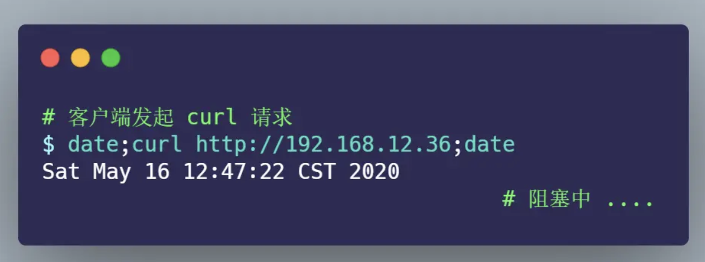
其间 tcpdump 抓包的命令如下：

过了一会， curl 返回了超时连接的错误：

从 date 返回的时间，可以发现在超时接近 1 分钟的时间后，curl 返回了错误。
接着，把 tcp_sys_timeout.pcap 文件用 Wireshark 打开分析，显示如下图：

从上图可以发现， 客户端发起了 SYN 包后，一直没有收到服务端的 ACK ，所以一直超时重传了 5 次，并且每次 RTO 超时时间是不同的：
- 第一次是在 1 秒超时重传
- 第二次是在 3 秒超时重传
- 第三次是在 7 秒超时重传
- 第四次是在 15 秒超时重传
- 第五次是在 31 秒超时重传
可以发现，每次超时时间 RTO 是指数（翻倍）上涨的，当超过最大重传次数后，客户端不再发送 SYN 包。
在 Linux 中，第一次握手的 SYN 超时重传次数，是如下内核参数指定的：
|
|
tcp_syn_retries 默认值为 5，也就是 SYN 最大重传次数是 5 次。
接下来，我们继续做实验，把 tcp_syn_retries 设置为 2 次：
|
|
重传抓包后，用 Wireshark 打开分析，显示如下图：

3.3. 实验一的实验小结
通过实验一的实验结果，我们可以得知，当客户端发起的 TCP 第一次握手 SYN 包，在超时时间内没收到服务端的 ACK，就会在超时重传 SYN 数据包，每次超时重传的 RTO 是翻倍上涨的，直到 SYN 包的重传次数到达 tcp_syn_retries 值后，客户端不再发送 SYN 包。

3.4. 实验二：TCP 第二次握手 SYN、ACK 丢包
为了模拟客户端收不到服务端第二次握手 SYN、ACK 包，我的做法是在客户端加上防火墙限制，直接粗暴的把来自服务端的数据都丢弃，防火墙的配置如下：

接着，在客户端执行 curl 命令：
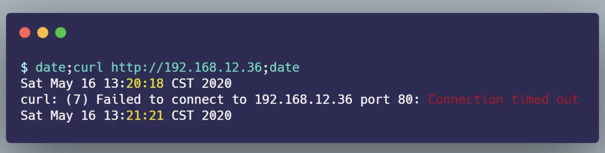
从 date 返回的时间前后，可以算出大概 1 分钟后，curl 报错退出了。
客户端在这其间抓取的数据包，用 Wireshark 打开分析，显示的时序图如下：
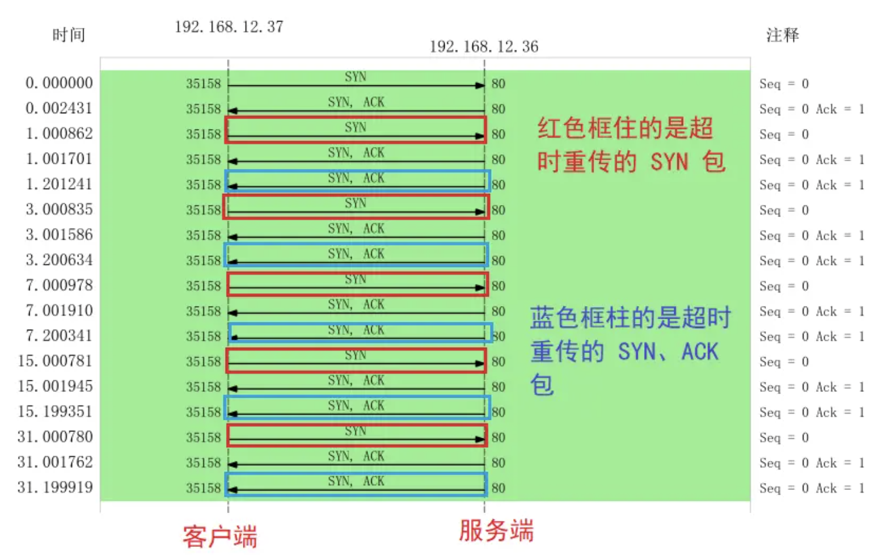
从图中可以发现：
- 客户端发起 SYN 后，由于防火墙屏蔽了服务端的所有数据包，所以 curl 是无法收到服务端的 SYN、ACK 包，当发生超时后，就会重传 SYN 包
- 服务端收到客户的 SYN 包后，就会回 SYN、ACK 包，但是客户端一直没有回 ACK，服务端在超时后，重传了 SYN、ACK 包，接着一会，客户端超时重传的 SYN 包又抵达了服务端，服务端收到后，然后回了 SYN、ACK 包，但是SYN、ACK包的重传定时器并没有重置，还持续在重传，因为第二次握手在没收到第三次握手的 ACK 确认报文时，会继续重传，直到达到重传到最大次数。
- 最后，客户端 SYN 超时重传次数达到了 5 次（tcp_syn_retries 默认值 5 次），就不再继续发送 SYN 包了。
所以，我们可以发现，当第二次握手的 SYN、ACK 丢包时，客户端会超时重发 SYN 包，服务端也会超时重传 SYN、ACK 包。
咦？客户端设置了防火墙，屏蔽了服务端的网络包，为什么 tcpdump 还能抓到服务端的网络包？
添加 iptables 限制后， tcpdump 是否能抓到包 ，这要看添加的 iptables 限制条件：
- 如果添加的是
INPUT规则，则可以抓得到包 - 如果添加的是
OUTPUT规则，则抓不到包
网络包进入主机后的顺序如下：
- 进来的顺序 Wire -> NIC -> tcpdump -> netfilter/iptables
- 出去的顺序 iptables -> tcpdump -> NIC -> Wire
4. TCP 重复确认和快速重传
当接收方收到乱序数据包时，会发送重复的 ACK，以便告知发送方要重发该数据包，当发送方收到 3 个重复 ACK 时，就会触发快速重传，立刻重发丢失数据包。
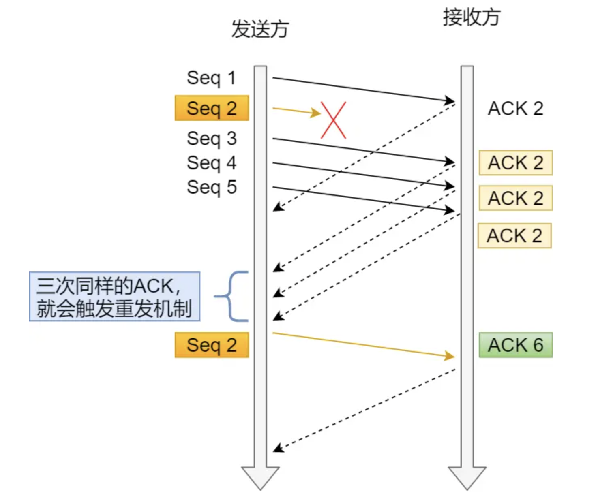
TCP 重复确认和快速重传的一个案例，用 Wireshark 分析，显示如下：

- 数据包 1 期望的下一个数据包 Seq 是 1，但是数据包 2 发送的 Seq 却是 10945，说明收到的是乱序数据包，于是回了数据包 3 ，还是同样的 Seq = 1，Ack = 1，这表明是重复的 ACK；
- 数据包 4 和 6 依然是乱序的数据包，于是依然回了重复的 ACK；
- 当对方收到三次重复的 ACK 后，于是就快速重传了 Seq = 1 、Len = 1368 的数据包 8；
- 当收到重传的数据包后，发现 Seq = 1 是期望的数据包，于是就发送了个确认收到快速重传的 ACK
注意：快速重传和重复 ACK 标记信息是 Wireshark 的功能，非数据包本身的信息。
以上案例在 TCP 三次握手时协商开启了选择性确认 SACK，因此一旦数据包丢失并收到重复 ACK ，即使在丢失数据包之后还成功接收了其他数据包，也只需要重传丢失的数据包。如果不启用 SACK，就必须重传丢失包之后的每个数据包。
如果要支持 SACK，必须双方都要支持。在 Linux 下，可以通过 net.ipv4.tcp_sack 参数打开这个功能（Linux 2.4 后默认打开）。
5. TCP 流量控制
TCP 为了防止发送方无脑的发送数据，导致接收方缓冲区被填满，所以就有了滑动窗口的机制，它可利用接收方的接收窗口来控制发送方要发送的数据量，也就是流量控制。
接收窗口是由接收方指定的值，存储在 TCP 头部中，它可以告诉发送方自己的 TCP 缓冲空间区大小，这个缓冲区是给应用程序读取数据的空间：
- 如果应用程序读取了缓冲区的数据，那么缓冲空间区就会把被读取的数据移除
- 如果应用程序没有读取数据，则数据会一直滞留在缓冲区。
接收窗口的大小，是在 TCP 三次握手中协商好的，后续数据传输时，接收方发送确认应答 ACK 报文时，会携带当前的接收窗口的大小，以此来告知发送方。
假设接收方接收到数据后，应用层能很快的从缓冲区里读取数据，那么窗口大小会一直保持不变，过程如下：

但是现实中服务器会出现繁忙的情况，当应用程序读取速度慢，那么缓存空间会慢慢被占满，于是为了保证发送方发送的数据不会超过缓冲区大小，服务器则会调整窗口大小的值，接着通过 ACK 报文通知给对方，告知现在的接收窗口大小，从而控制发送方发送的数据大小。
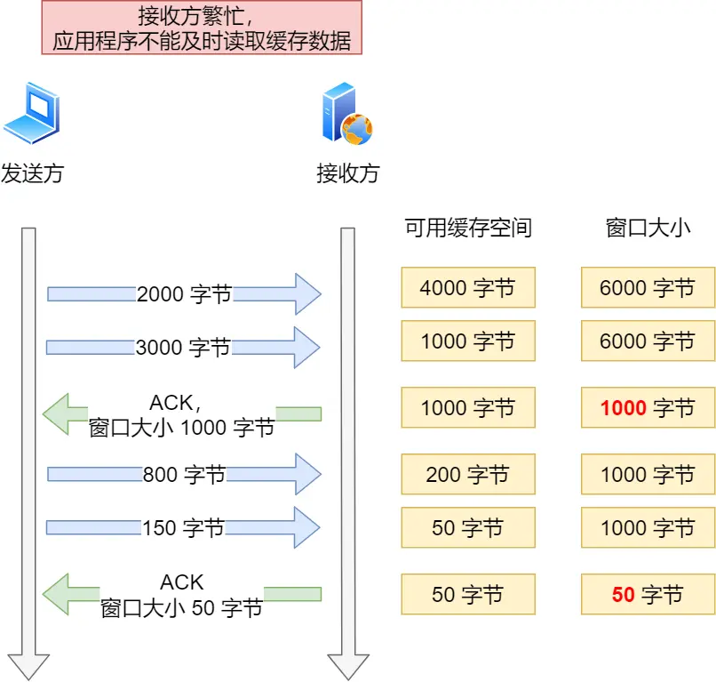
Author David
LastMod 2023-07-17